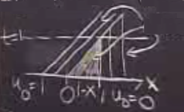

[Lineer problemler atlandı]
Şimdi gayrı lineer problemlere gelelim. Alttaki model denkleme bakalım,
$$ u_t + u u_x = 0 \qquad (1) $$
Bu denklem ile daha önce gördüğümüz alttaki denklem arasındaki fark bariz,
$$ u_t = c u_x $$
Üstteki yatay iletim (advection) denkleminde sabit bir hız var, $c$. Ama iki üstteki durumda hız $-u$, ya da $c$'nin yerine $-u$ koymuş oluyoruz. O gayrı lineer denklemi analiz etmek istiyoruz, daha önce olduğu gibi analitik olarak çözmek isteriz, eğer mümkünse bir formüle erişmek isteriz.. Karakteristik çizgiler bağlamında neler olduğuna bakmak isteriz.. Sonuçta tek bir uzay değişkeni ve tek bir denklem var, buradan karakteristiklere bakarak işin özünü görmek mümkün olmalı.
Ana denkleme eşdeğer olan bir form görelim,
$$ \frac{\partial u}{\partial t} + \frac{\partial }{\partial x} \underbrace{ \left( \frac{u^2}{2} \right)}_{f(u)} = 0 $$
Hatta üstteki forma daha "doğru" form ismi verilebilir, eğer onu açsak (1)'e erişirdik fakat üstteki denklemdeki parantez içindeki kısmın fiziksel bir anlamı var, o kısma akış (flux) ismi veriliyor.
Fakat göreceğiz ki bu diferansiyel denklem aynı noktada iki tane çözüm ortaya çıkartabiliyor, ve onlardan birini seçmemiz gerekiyor. Diğer bir deyişle çözüm süreksiz (discontinuous) hale gelebiliyor. Mükemmel pürüzsüz bir başlangıç fonksiyonu bir süre sonra süreksiz oluyor. Sürekli başlıyoruz, çözüm karakteristik çizgiler üzerinde sabit, fakat iki karakteristik çizgi birbiriyle çakıştığında ne olur? Daha önce çakışma olmadı çünkü ana denklem o türde değildi. Burada mümkün!
O durumu alta çizdim,

[devam edecek]